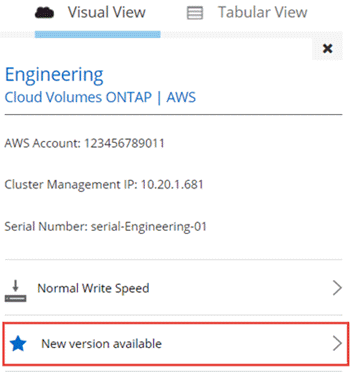

リリースノート
リリースノート
Cloud Volumes ONTAP ソフトウェアを更新しています
 変更を提案
変更を提案
Cloud Manager には、現在の Cloud Volumes ONTAP リリースへのアップグレード、または Cloud Volumes ONTAP を以前のリリースにダウングレードするために使用できるいくつかのオプションがあります。ソフトウェアをアップグレードまたはダウングレードする前に、 Cloud Volumes ONTAP システムを準備する必要があります。
概要
Cloud Manager は、 Cloud Volumes ONTAP の新しいバージョンが利用可能になると、 Cloud Volumes ONTAP の作業環境に次の通知を表示します。

この通知からアップグレードプロセスを開始できます。アップグレードプロセスを自動化するには、 S3 バケットからソフトウェアイメージを取得し、イメージをインストールしてから、システムを再起動します。詳細については、を参照してください Cloud Volumes ONTAP を最新バージョンにアップグレードしています。

|
HA システムの場合、 Cloud Manager のアップグレードプロセスの一環として HA メディエーターがアップグレードされることがあります。 |
ソフトウェアアップデートの詳細オプション
Cloud Manager には、 Cloud Volumes ONTAP ソフトウェアを更新するための次の高度なオプションも用意されています。
-
外部 URL のイメージを使用してソフトウェアを更新します
このオプションは、 Cloud Manager が S3 バケットにアクセスしてソフトウェアをアップグレードできない場合、パッチが提供されている場合、またはソフトウェアを特定のバージョンにダウングレードする場合に役立ちます。
詳細については、を参照してください HTTP または FTP サーバを使用した Cloud Volumes ONTAP のアップグレードまたはダウングレード。
-
システムの代替イメージを使用してソフトウェアを更新します
このオプションを使用すると、代替ソフトウェアイメージをデフォルトイメージにすることで、以前のバージョンにダウングレードできます。このオプションは HA ペアでは使用できません。
詳細については、を参照してください ローカルイメージを使用した Cloud Volumes ONTAP のダウングレード。
Cloud Volumes ONTAP ソフトウェアの更新の準備
アップグレードまたはダウングレードを実行する前に、システムの準備ができていることを確認し、必要な設定変更を行う必要があります。
ダウンタイムの計画
シングルノードシステムをアップグレードする場合は、アップグレードプロセスによって、 I/O が中断される最長 25 分間システムがオフラインになります。
HA ペアのアップグレードは中断されません。無停止アップグレードでは、クライアントへのサービスを維持したまま、 HA ペアの両方のノードが同時にアップグレードされます。
バージョン要件の確認
アップグレードまたはダウングレード可能な ONTAP のバージョンは、システムで現在実行している ONTAP のバージョンによって異なります。
バージョン要件については、を参照してください "ONTAP 9 ドキュメント：「 Cluster update requirements"。
SnapMirror 転送の一時停止
Cloud Volumes ONTAP システムにアクティブな SnapMirror 関係がある場合は、 Cloud Volumes ONTAP ソフトウェアを更新する前に転送を一時停止することを推奨します。転送を一時停止すると、 SnapMirror の障害を防ぐことができます。デスティネーションシステムからの転送を一時停止する必要があります。
ここでは、 System Manager for Version 9.3 以降の使用方法について説明します。
-
"System Manager にログインします。" デスティネーションシステムから作成します。
-
［ * 保護 ］ > ［ 関係 * ］ の順にクリックします。
-
関係を選択し、 * Operations > Quiesce * をクリックします。
アグリゲートがオンラインであることの確認
ソフトウェアを更新する前に、 Cloud Volumes ONTAP のアグリゲートがオンラインである必要があります。アグリゲートはほとんどの構成でオンラインになっている必要がありますが、オンラインになっていない場合はオンラインにしてください。
ここでは、 System Manager for Version 9.3 以降の使用方法について説明します。
-
作業環境で、メニューアイコンをクリックし、 * 詳細設定 > 高度な割り当て * をクリックします。
-
アグリゲートを選択し、 * Info * をクリックして、状態がオンラインであることを確認します。

-
アグリゲートがオフラインの場合は、 System Manager を使用してアグリゲートをオンラインにします。
-
ストレージ > アグリゲートとディスク > アグリゲート * をクリックします。
-
アグリゲートを選択し、 * その他の操作 > ステータス > オンライン * をクリックします。
Cloud Volumes ONTAP を最新バージョンにアップグレードしています
Cloud Manager から最新バージョンの Cloud Volumes ONTAP に直接アップグレードできます。新しいバージョンが利用可能になると、 Cloud Manager から通知されます。
Cloud Volumes ONTAP システムでは、ボリュームやアグリゲートの作成などの Cloud Manager 操作を実行してはいけません。
-
シングルノードシステムをアップグレードする場合は、アップグレードプロセスによって、 I/O が中断される最長 25 分間システムがオフラインになります。
-
HA ペアのアップグレードは中断されません。無停止アップグレードでは、クライアントへのサービスを維持したまま、 HA ペアの両方のノードが同時にアップグレードされます。
-
[ 作業環境（ Working Environments ） ] をクリックします。
-
作業環境を選択します。
新しいバージョンが使用可能になると、右側のペインに通知が表示されます。
ページに表示される新しいバージョンの通知を示します。"]
-
新しいバージョンが利用可能な場合は、 * アップグレード * をクリックします。
-
[ リリース情報 ] ページで、リンクをクリックして、指定したバージョンのリリースノートを読み、 [ * 読み … * ] チェックボックスをオンにします。
-
エンドユーザライセンス契約（ EULA ）ページで EULA を読んでから、「 * I read and approve the EULA * 」を選択します。
-
[ レビューと承認 ] ページで、重要なメモを読み、 [* I understand … * ] を選択して、 [* Go * ] をクリックします。
Cloud Manager がソフトウェアのアップグレードを開始します。ソフトウェアの更新が完了したら、作業環境に対してアクションを実行できます。
SnapMirror 転送を一時停止した場合は、 System Manager を使用して転送を再開します。
HTTP または FTP サーバを使用した Cloud Volumes ONTAP のアップグレードまたはダウングレード
Cloud Volumes ONTAP ソフトウェアイメージを HTTP サーバまたは FTP サーバに配置し、 Cloud Manager からソフトウェアの更新を開始できます。このオプションは、 Cloud Manager が S3 バケットにアクセスしてソフトウェアをアップグレードできない場合、またはソフトウェアをダウングレードする場合に使用できます。
-
シングルノードシステムをアップグレードする場合は、アップグレードプロセスによって、 I/O が中断される最長 25 分間システムがオフラインになります。
-
HA ペアのアップグレードは中断されません。無停止アップグレードでは、クライアントへのサービスを維持したまま、 HA ペアの両方のノードが同時にアップグレードされます。
-
Cloud Volumes ONTAP ソフトウェアイメージをホストできる HTTP サーバまたは FTP サーバを設定します。
-
vPC への VPN 接続がある場合は、ご使用のネットワーク内の HTTP サーバまたは FTP サーバに Cloud Volumes ONTAP ソフトウェアイメージを配置できます。それ以外の場合は、 AWS の HTTP サーバまたは FTP サーバにファイルを配置する必要があります。
-
Cloud Volumes ONTAP 用に独自のセキュリティグループを使用する場合は、送信ルールで HTTP または FTP 接続が許可されていることを確認し、 Cloud Volumes ONTAP がソフトウェアイメージにアクセスできるようにします。
事前定義された Cloud Volumes ONTAP セキュリティグループでは、デフォルトで発信 HTTP 接続と FTP 接続が許可されます。 -
からソフトウェアイメージを取得します "ネットアップサポートサイト"。
-
ソフトウェアイメージを、ファイルの提供元の HTTP サーバまたは FTP サーバ上のディレクトリにコピーします。
-
Cloud Manager の作業環境で、メニューアイコンをクリックし、 * Advanced > Update Cloud Volumes ONTAP * をクリックします。
-
アップデートソフトウェアページで、「 URL から利用可能なイメージを選択」を選択し、 URL を入力して「 * イメージの変更 * 」をクリックします。
-
[* Proceed]( 続行 ) をクリックして確定します
Cloud Manager がソフトウェアの更新を開始します。ソフトウェアの更新が完了したら、作業環境に対してアクションを実行できます。
SnapMirror 転送を一時停止した場合は、 System Manager を使用して転送を再開します。
ローカルイメージを使用した Cloud Volumes ONTAP のダウングレード
同一リリースファミリの以前のリリース（ 9.5 から 9.4 など）への Cloud Volumes ONTAP の移行は、ダウングレードと呼ばれます。新規クラスタまたはテストクラスタをダウングレードする場合は、サポートなしでダウングレードできますが、本番クラスタをダウングレードする場合は、テクニカルサポートにお問い合わせください。
各 Cloud Volumes ONTAP システムには、実行中の現在のイメージとブート可能な代替イメージの 2 つのソフトウェアイメージを格納できます。Cloud Manager では、代替イメージをデフォルトイメージに変更できます。現在のイメージに問題が発生している場合は、このオプションを使用して以前のバージョンの Cloud Volumes ONTAP にダウングレードできます。
このダウングレードプロセスは、シングルクラウドボリューム ONTAP システムでのみ使用できます。HA ペアでは使用できません。このプロセスでは、 Cloud Volumes ONTAP システムが最大 25 分間オフラインになります。
-
作業環境で、メニューアイコンをクリックし、 * 詳細設定 > Cloud Volumes ONTAP の更新 * をクリックします。
-
ソフトウェアの更新ページで、代替イメージを選択し、 * イメージの変更 * をクリックします。
-
[* Proceed]( 続行 ) をクリックして確定します
Cloud Manager がソフトウェアの更新を開始します。ソフトウェアの更新が完了したら、作業環境に対してアクションを実行できます。
SnapMirror 転送を一時停止した場合は、 System Manager を使用して転送を再開します。